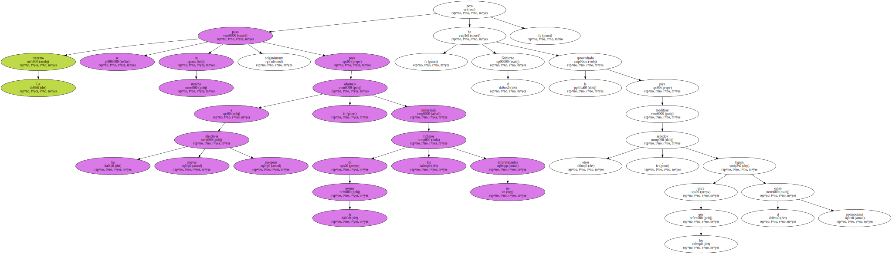
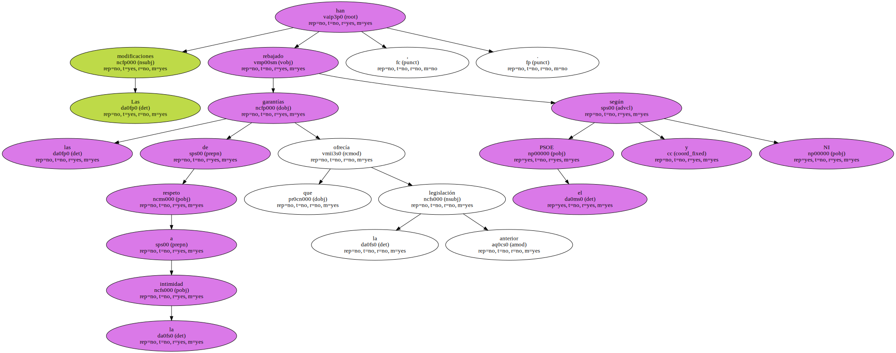
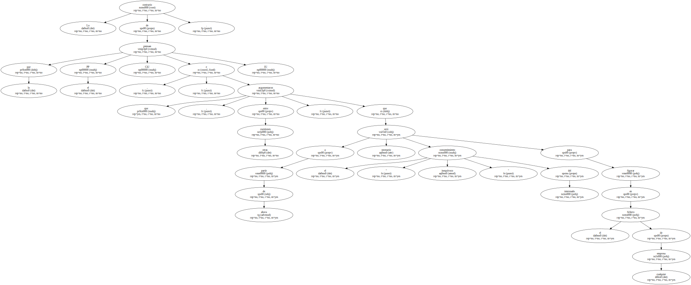

La nueva ley de datos es en realidad una reforma de la ley de 1992 de regulación del tratamiento automatizado de los datos de carácter personal.

La reforma se puso en marcha originalmente para adaptarla a las nuevas directivas europeas , incluyendo en la norma los ficheros no informatizados , pero el Gobierno la ha aprovechado para modificar otros aspectos , entre los que figura el censo promocional.
Las modificaciones han rebajado las garantías de respeto a la intimidad que ofrecía la anterior legislación , según el PSOE y NI.
Lo contrario de lo que piensan el PP , CiU e IU , que argumentaron , entre otras cuestiones , que a partir de ahora será necesario el " consentimiento inequívoco " del interesado para figurar en el fichero de cualquier empresa.
